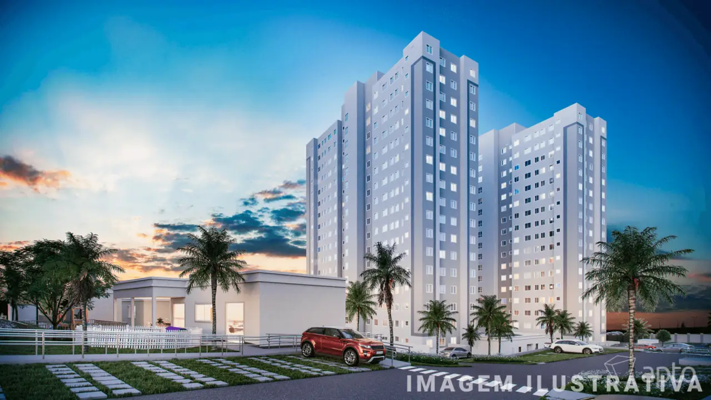

Jardim dos corais
Bairro - Portal do Sol/Jp
O Condomínio Jardim dos Corais, desenvolvido pela MRV, está localizado no bairro Altiplano Cabo Branco, em João Pessoa – PB. O empreendimento oferece apartamentos funcionais, com opções de 1 ou 2 quartos e áreas de 42 m² a 44 m², ideal para quem busca praticidade e conforto.
R$ 2.000,00
Mais Detalhes